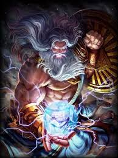
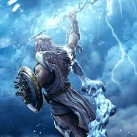
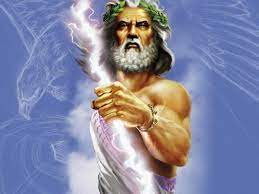
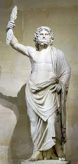

Zeus Kimdir?
Zeus (Eski Yunanca: Grekçe: Ζεύς, Zeús; Modern Yunanca: Δίας, Días), "Tanrıların ve İnsanların Babası" Yunan mitolojisinde en güçlü ve önemli tanrıdır. Roma'da Jüpiter olarak da bilinir. Göklerin, şimşeklerin ve gök gürültülerinin tanrısıdır. Çoğu zaman elinde bir şimşek ile resmedilmiştir. Bereket ile özdeşleşmiştir, yağmur ondan beklenir. Titan Kronos'un ve eşi Rhea'nın en küçük çocuğu ve oğludur. Tanrıça Hera'nın kocasıdır. Simgesi şimşeğin yanında boğa, kartal ve meşe ağacıdır. Aynı zamanda tanrıların kralı olduğu için taht ve asa ile de sık sık betimlenir. Ayrıca Athena'nın ona hediyesi olan Aegis'in de taşıyıcısıdır. Zeus'un en eski kült ve bilicilik merkezi Yunanistan'daki Dodona antik şehirdir. Habercisi oğlu Hermes'tir. Gigantlar arasındaki karşıtı Kral Porphyrion'dur.
En bilinen özelliklerinden biri çapkın oluşudur. İstediği her şeyin şekline girebilen Zeus'un Leda için kuğu, Antiope için satir, Aegina için ateş, Danae için altın yağmuru, Alkmene için kocasının kılığına, Hera için guguk kuşu, Callisto için Bakire Tanrıça Artemis'in kılığına, Mnemosyne için yakışıklı bir çoban, İo için bulut, Demeter için geyik, Europa için boğa oluşu kudretine en iyi örnektir. Ölümlü ölümsüz herkese aşık olabilen tanrıların tanrısı Zeus çapkınlığı yüzünden eşi Hera tarafından sürekli takip ettirilmektedir. Tanrı Zeus'un tahtı için yaptıkları şeylerin başlıcaları şunlardır: Eşi Metis'i yutması, Prometheus'u zincirlemesi, Thetis'i bir ölümlü ile evlendirmesi.
Babası olan Titan Tanrı Kronos'u diğer Olimpos tanrılarının yardımıyla yer Tartarusa hapsetti. Sonra Atlantisliler Tanrı Zeus'un takipçilerini (yani Yunanları) ellerinde olmadan (çünkü onlara tuzak kurulmuştu) yok ederek Olimposlu tanrıların gücünü azaltıp Kronos ve yanındaki diğer Titanları serbest bıraktılar. Zeus ayrıca İksion, Salmoneus, Arkadya Kralı Lykaon ve ateşi çalan Prometheus'u küstahlıkları nedeniyle cezalandırmıştır.

<<< Poseidon'a GitHades'e Git >>>